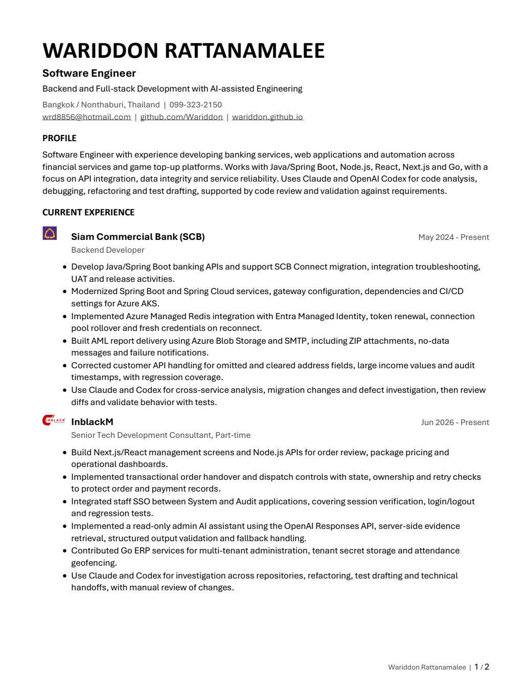
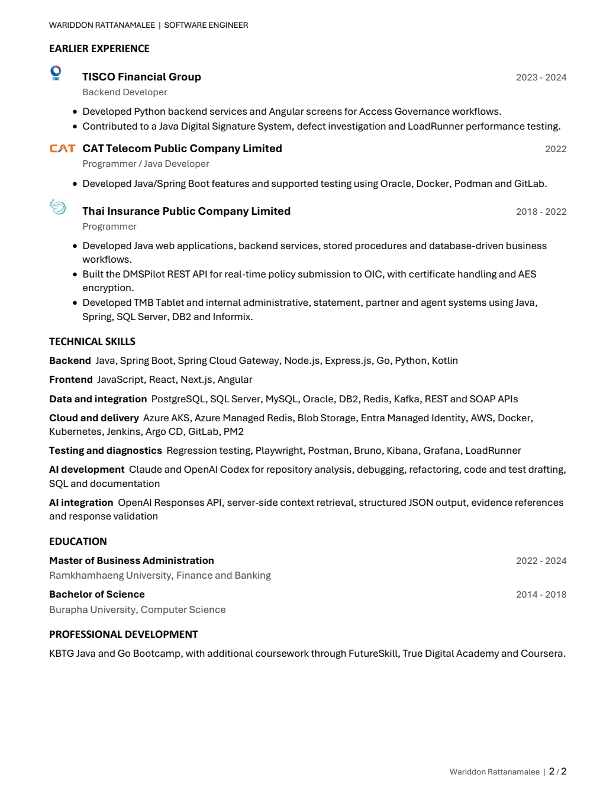

Read the resume as text
Wariddon Rattanamalee | 1 / 2 WARIDDON RATTANAMALEE Software Engineer Backend and Full-stack Development with AI-assisted Engineering Bangkok / Nonthaburi, Thailand | 099-323-2150 wrd8856@hotmail.com | github.com/Wariddon | wariddon.github.io PROFILE Software Engineer with experience developing banking services, web applications and automation across financial services and game top-up platforms. Works with Java/Spring Boot, Node.js, React, Next.js and Go, with a focus on API integration, data integrity and service reliability. Uses Claude and OpenAI Codex for code analysis, debugging, refactoring and test drafting, supported by code review and validation against requirements. CURRENT EXPERIENCE Extend IT Resource (Apar Technologies) May 2024 - Present Backend Developer Client: Siam Commercial Bank • Develop Java/Spring Boot banking APIs and support SCB Connect migration, integration troubleshooting, UAT and release activities. • Modernized Spring Boot and Spring Cloud services, gateway configuration, dependencies and CI/CD settings for Azure AKS. • Implemented Azure Managed Redis integration with Entra Managed Identity, token renewal, connection pool rollover and fresh credentials on reconnect. • Built AML report delivery using Azure Blob Storage and SMTP, including ZIP attachments, no-data messages and failure notifications. • Corrected customer API handling for omitted and cleared address fields, large income values and audit timestamps, with regression coverage. • Use Claude and Codex for cross-service analysis, migration changes and defect investigation, then review diffs and validate behavior with tests. InblackM Jun 2026 - Present Senior Tech Development Consultant, Part-time • Build Next.js/React management screens and Node.js APIs for order review, package pricing and operational dashboards. • Implemented transactional order handover and dispatch controls with state, ownership and retry checks to protect order and payment records. • Integrated staff SSO between System and Audit applications, covering session verification, login/logout and regression tests. • Implemented a read-only admin AI assistant using the OpenAI Responses API, server-side evidence retrieval, structured output validation and fallback handling. • Contributed Go ERP services for multi-tenant administration, tenant secret storage and attendance geofencing. • Use Claude and Codex for investigation across repositories, refactoring, test drafting and technical handoffs, with manual review of changes. WARIDDON RATTANAMALEE | SOFTWARE ENGINEER Wariddon Rattanamalee | 2 / 2 EARLIER EXPERIENCE TISCO Financial Group 2023 - 2024 Backend Developer • Developed Python backend services and Angular screens for Access Governance workflows. • Contributed to a Java Digital Signature System, defect investigation and LoadRunner performance testing. CAT Telecom Public Company Limited 2022 Programmer / Java Developer • Developed Java/Spring Boot features and supported testing using Oracle, Docker, Podman and GitLab. Thai Insurance Public Company Limited 2018 - 2022 Programmer • Developed Java web applications, backend services, stored procedures and database-driven business workflows. • Built the DMSPilot REST API for real-time policy submission to OIC, with certificate handling and AES encryption. • Developed TMB Tablet and internal administrative, statement, partner and agent systems using Java, Spring, SQL Server, DB2 and Informix. TECHNICAL SKILLS Backend Java, Spring Boot, Spring Cloud Gateway, Node.js, Express.js, Go, Python, Kotlin Frontend JavaScript, React, Next.js, Angular Data and integration PostgreSQL, SQL Server, MySQL, Oracle, DB2, Redis, Kafka, REST and SOAP APIs Cloud and delivery Azure AKS, Azure Managed Redis, Blob Storage, Entra Managed Identity, AWS, Docker, Kubernetes, Jenkins, Argo CD, GitLab, PM2 Testing and diagnostics Regression testing, Playwright, Postman, Bruno, Kibana, Grafana, LoadRunner AI development Claude and OpenAI Codex for repository analysis, debugging, refactoring, code and test drafting, SQL and documentation AI integration OpenAI Responses API, server-side context retrieval, structured JSON output, evidence references and response validation EDUCATION Master of Business Administration 2022 - 2024 Ramkhamhaeng University, Finance and Banking Bachelor of Science 2014 - 2018 Burapha University, Computer Science PROFESSIONAL DEVELOPMENT KBTG Java and Go Bootcamp, with additional coursework through FutureSkill, True Digital Academy and Coursera.